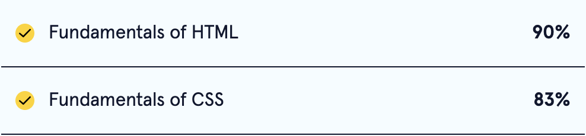
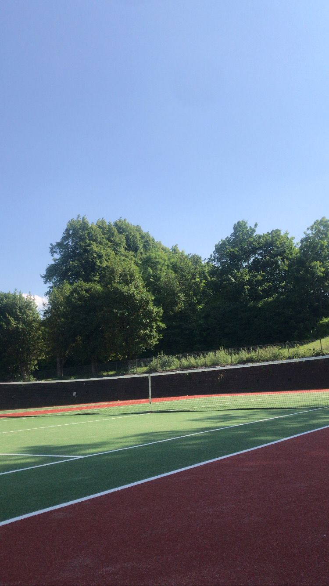
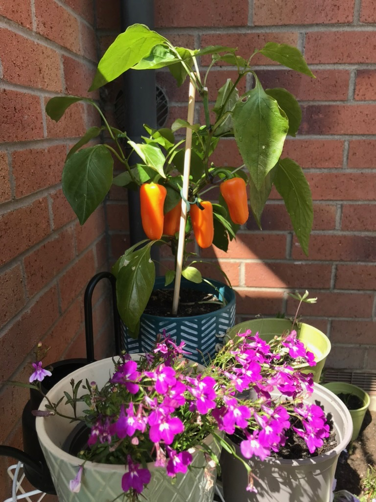
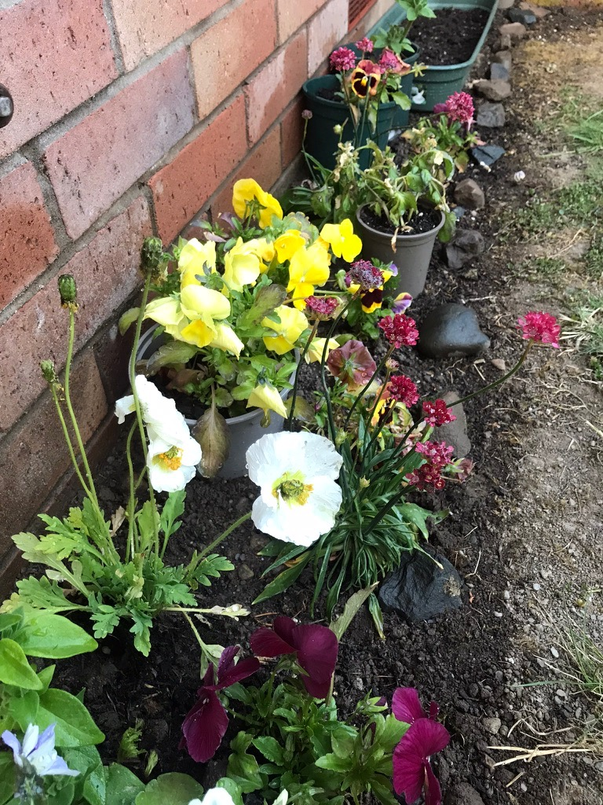

Growings On Vol 2
Another round up of coding, gardening and dog owning!
Code Update

Since my last update four more chapters have been completed, which included two assessments. I had a little bit more familiarity with html before I started, which I think is reflected in my scoring. Now that I've got a bit more experience using css as well I'd expect a resit would bring that 83 up!
Although I wouldn't necessarily suggest this website is aesthetic I am adding tools to the arsenal that will allow me to develop more attractive looking websites. Right now I suppose we'll have to settle for
colorful
The next chapter is on deploying websites so hopefully the next update will be a much simpler link rather than all of this file nonsense!
Sports News

Over the past couple of weeks Katy has been rediscovering a passion for tennis and while I was just tagging along to begin with I fear I may have caught the bug! We've had a range of success on our three outings thus far and are on track for a trip to Wimbledon qualifiers in a couple of years. Not wanting to be one complaining about the weather our outing yesterday was a real challenge at 29 degrees! It was a bit hot to give it a real go so Katy remains undefeated...
for now
I feel that we've taken to the courts at just the right time with Wimbledon around the corner. Now that I am a tennis expert I will be watching with a much more keen and critical eye.
Gardening
The garden is looking as healthy as ever, even in this intense heat thanks to Katy's green thumb. Neil and I have been helping: himself has taken to stealing any spare plant pots and I can occasionally be found watering on especially dry days.


Pupdate
| Days of the Week |
Behaviour |
Quote of the Day |
| Friday |
8/10 |
I do not care for arthouse cinema |
| Saturday |
8/10 |
What is existence without chicken? |
| Sunday |
6/10 |
It's too hot |
| Monday |
7/10 |
No one can stop me |
| Tuesday |
2/10 |
I do not welcome sleep |

From the dog's mouth:
I have a lot of regrets this week. I ate a shoe I wasn't supposed to. I barked and barked when I wasn't supposed to. But it's very stressful being a puppy and sometimes things happen beyond our control. It's been so hot that I refuse to go outside between the hours of 10am and 5pm. If you see me outside at this time call the RSPCA. You should have the number on speed dial anyway in case mama and dada forget to give me my chicken again. This morning I met the strangest dog who looked a lot like me but little. We were both very confused, he was also a puppy and so we've only just realised mirrors aren't real. I'm still trying to be everyone's friend and I think I even won over Grumpy James this week but dada says that's just because they've found another dog to be more grumpy about (I hope they aren't grumpy at Bilba because she's a dear friend of mine). Anyway, send me lots of chicken and I will behave when I next see you.